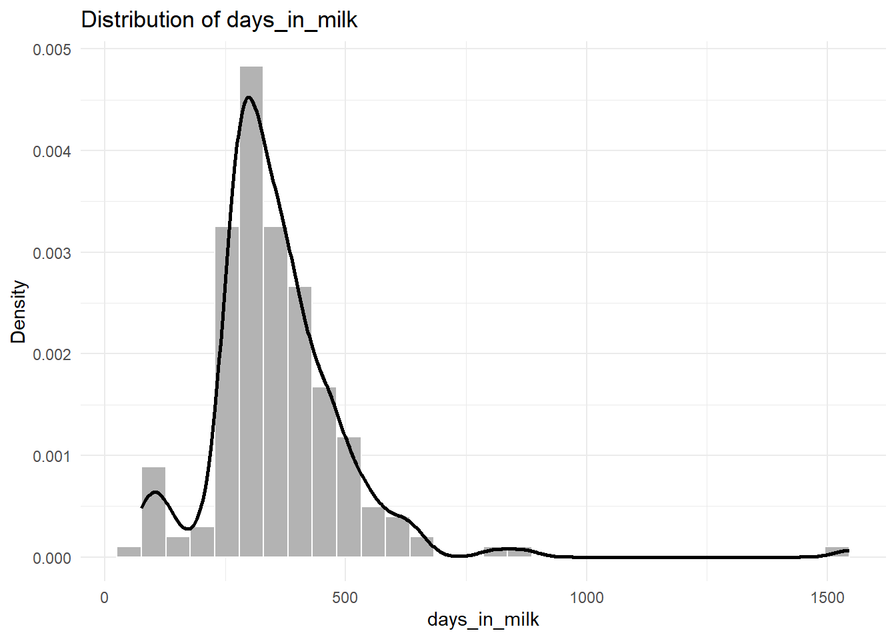
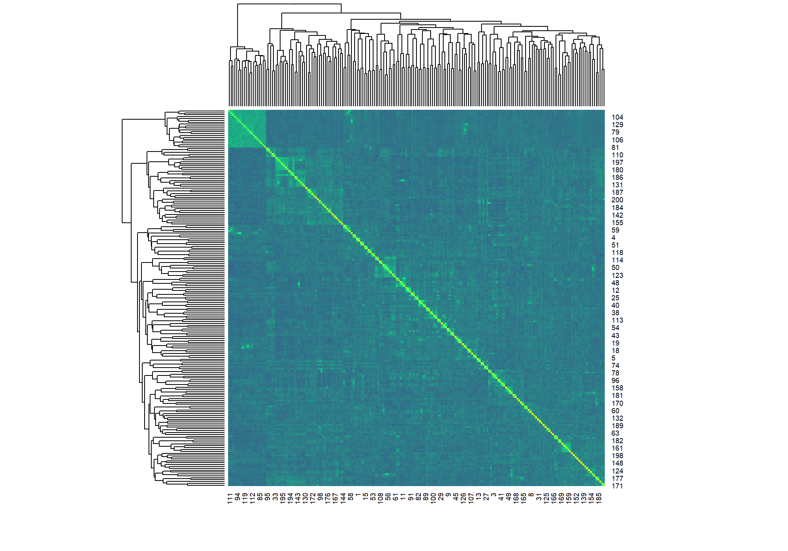
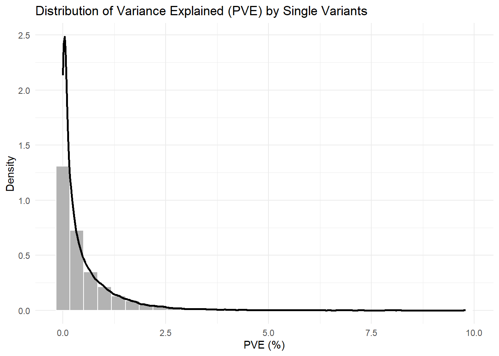
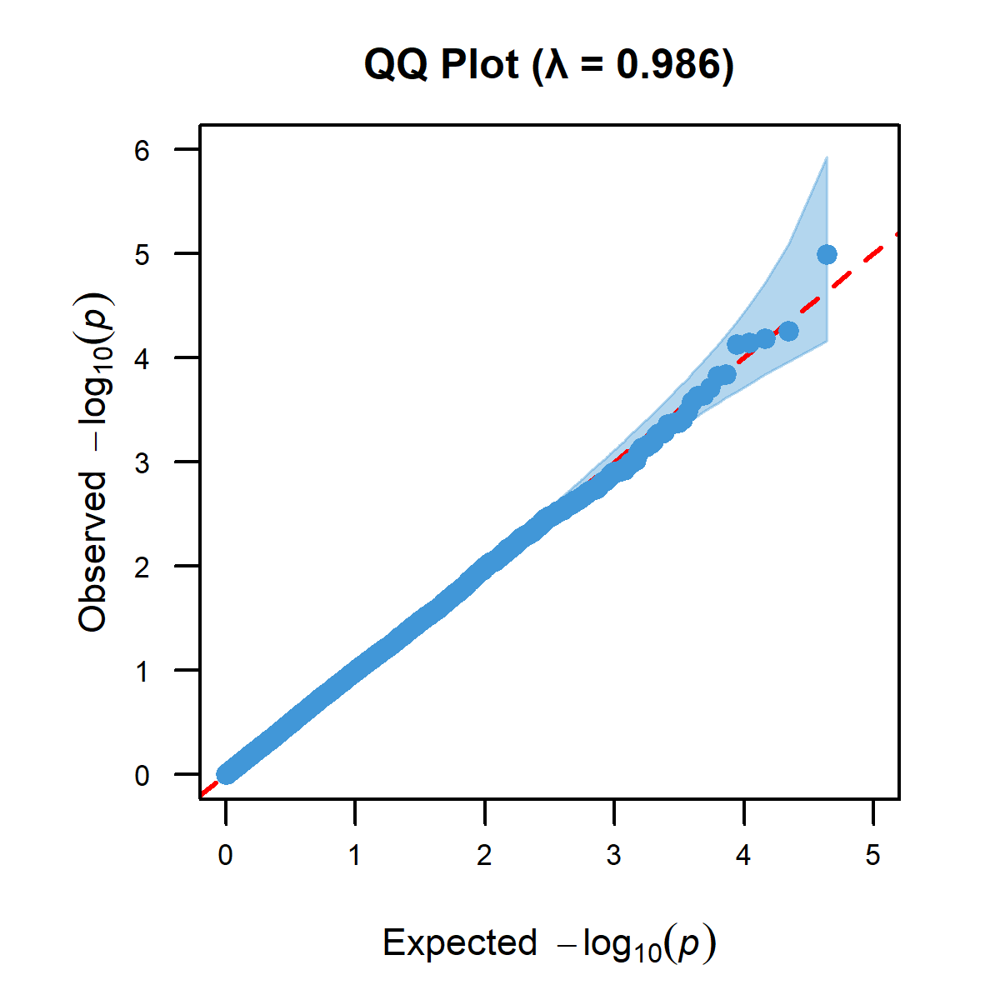
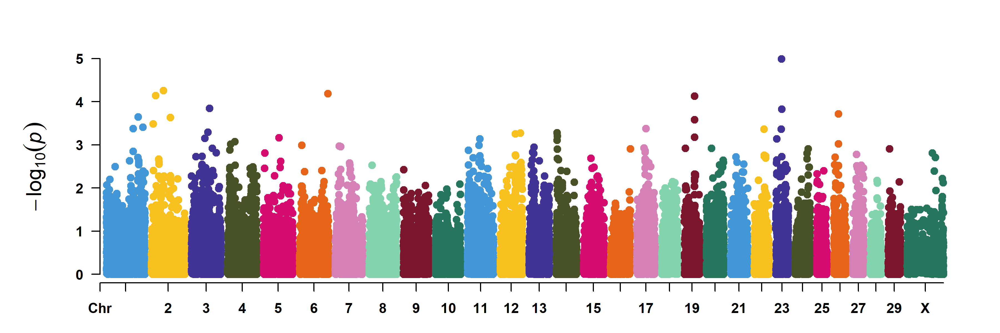
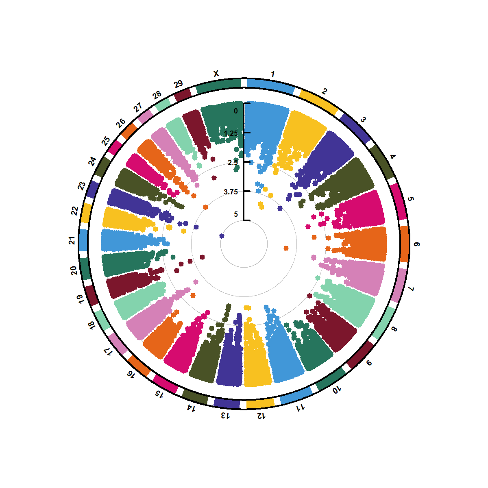

3 GWAS 절차
개요📋 단계별 튜토리얼: R에서 GWAS 수행
- 필요 패키지 설치/로딩
- PLINK 유전자형 데이터 & 표현형 데이터 로딩 및 정리
- GRM 계산 및 시각화
- lme4breeding + GWASTools + GENESIS 기반 GWAS 귀무모형(Null model) 적합
- 단일 마커 연관성 검정, P 값 보정, 결과 시각화
3.1 패키지 설치 & 로딩
# ---- 설치어시스턴트 -------------------------------------------------------
cran_pkgs <- c("genio", "qqman", "sommer", "lme4breeding", "dplyr", "CMplot", "stringr", "ggplot2", "tibble", "readr")
bioc_pkgs <- c("GENESIS","GWASTools","BiocParallel")
if (!requireNamespace("BiocManager", quietly = TRUE)) install.packages("BiocManager")
install_if_missing <- function(pkgs, installer) {
need <- pkgs[!vapply(pkgs, requireNamespace, logical(1), quietly = TRUE)]
if (length(need)) installer(need, ask = FALSE)
}
install_if_missing(cran_pkgs, install.packages)
install_if_missing(bioc_pkgs, BiocManager::install)
# ---- 라이브러리 로드 ------------------------------------------------------
library(genio)
library(GENESIS)
library(GWASTools)
library(qqman)
library(CMplot)
library(lme4breeding)
library(sommer)
library(dplyr)
library(stringr)
library(ggplot2)
library(tibble)3.2 경로/입력 정의
breed <- "holstein"
plink_prefix <- "03_qc/NIAS_ibv3_296ea.holstein"
pheno_file <- "NIAS_ibv3_296ea_pheno.csv"
report_dir <- file.path("05_gwas", breed)
figs_dir <- file.path(report_dir, "figs")
gwas_dir <- file.path(report_dir, "gwas")
tables_dir <- file.path(report_dir, "tables")
for (d in c(report_dir, figs_dir, gwas_dir, tables_dir)) dir.create(d, recursive = TRUE, showWarnings = FALSE)3.3 PLINK binary 데이터 불러오기
# read_plink()는 SNP x Sample 행렬(X), bim(마커정보), fam(개체정보)을 불러온다.
plink <- read_plink(plink_prefix)
X <- plink$X # 행: SNP, 열: 샘플, 값: 0/1/2
bim <- plink$bim # chr, id, pos, alt, ref 등
fam <- plink$fam # family/sample id 등
# 미리보기
X[1:5, 1:5]#> 3530 3528 3527 3195 3994
#> Hapmap43437-BTA-101873 1 1 1 1 0
#> ARS-BFGL-NGS-16466 0 0 0 0 0
#> ARS-BFGL-NGS-105096 1 0 1 0 0
#> Hapmap34944-BES1_Contig627_1906 0 0 1 0 0
#> ARS-BFGL-NGS-98142 1 0 2 0 0#> # A tibble: 6 × 6
#> chr id posg pos alt ref
#> <chr> <chr> <dbl> <int> <chr> <chr>
#> 1 1 Hapmap43437-BTA-101873 0 135098 A G
#> 2 1 ARS-BFGL-NGS-16466 0 267940 A G
#> 3 1 ARS-BFGL-NGS-105096 0 353745 A G
#> 4 1 Hapmap34944-BES1_Contig627_1906 0 393248 A C
#> 5 1 ARS-BFGL-NGS-98142 0 471078 A G
#> 6 1 Hapmap53946-rs29015852 0 516404 A G#> # A tibble: 6 × 6
#> fam id pat mat sex pheno
#> <chr> <chr> <chr> <chr> <int> <dbl>
#> 1 1 3530 0 0 0 -9
#> 2 2 3528 0 0 0 -9
#> 3 3 3527 0 0 0 -9
#> 4 4 3195 0 0 0 -9
#> 5 5 3994 0 0 0 -9
#> 6 6 3786 0 0 0 -93.4 표현형 데이터 로딩 & 정렬
pheno <- readr::read_csv(pheno_file, show_col_types = FALSE)
sample_id_chr <- colnames(X) # PLINK 열이 샘플 ID
scanID <- seq_along(sample_id_chr)
pheno_ord <- pheno[match(sample_id_chr, pheno$individual_id), , drop = FALSE]
stopifnot(!any(is.na(pheno_ord$individual_id)))
pheno_ord$sample_id <- sample_id_chr
pheno_ord$scanID <- scanID
stopifnot(identical(as.character(pheno_ord$individual_id), pheno_ord$sample_id))
# 미리보기
str(pheno_ord)#> tibble [200 × 15] (S3: tbl_df/tbl/data.frame)
#> $ individual_id : num [1:200] 3530 3528 3527 3195 3994 ...
#> $ breed : chr [1:200] "holstein" "holstein" "holstein" "holstein" ...
#> $ sire_id : num [1:200] 3074 2930 3048 3056 3050 ...
#> $ dam_id : num [1:200] 3210 3343 3281 3016 3799 ...
#> $ birth_date : Date[1:200], format: "2009-03-02" "2009-01-17" ...
#> $ HYS : num [1:200] 1.16e+10 1.18e+10 1.18e+10 1.18e+10 1.16e+10 ...
#> $ farm_id : num [1:200] 116482 117952 117952 117952 116482 ...
#> $ parity : num [1:200] 1 1 1 1 1 1 1 1 1 1 ...
#> $ days_in_milk : num [1:200] 482 531 382 556 264 447 425 400 345 385 ...
#> $ milk_yield_305.days : num [1:200] 7965 9717 12554 9951 7982 ...
#> $ milk_fat_yield_305.days : num [1:200] 281 314 468 445 271 297 305 347 359 355 ...
#> $ milk_protein_yield_305.days: num [1:200] 260 302 384 334 260 240 230 327 293 309 ...
#> $ somatic_cell_count : num [1:200] 1.39 1.89 2.14 4.31 3.9 ...
#> $ sample_id : chr [1:200] "3530" "3528" "3527" "3195" ...
#> $ scanID : int [1:200] 1 2 3 4 5 6 7 8 9 10 ...# 표현형 분포 확인
# --- 분석할 형질을 이 변수에 지정 ---
single_trait <- "days_in_milk"
p=ggplot(pheno_ord, aes(x = .data[[single_trait]])) +
geom_histogram(aes(y = after_stat(density)), bins = 30, fill = "grey70", color = "white") +
geom_density(linewidth = 1) +
labs(
title = paste("Distribution of", single_trait),
x = single_trait,
y = "Density"
) +
theme_minimal()
# 변수에 저장된 플롯 확인
print(p)
3.5 GRM(유전체 관계 행렬) 계산 & 간단 시각화
# A.mat은 -1/0/1 코딩된 genotype matrix 이용
G_mat <- t(X) # 샘플 x SNP
colnames(G_mat) <- rownames(X)
rownames(G_mat) <- sample_id_chr
G_code <- G_mat - 1 # 0/1/2 -> -1/0/1
KI <- sommer::A.mat(G_code)#> Imputing markers with mean value# 수치안정성(아주 작은 ridge)
diag(KI) <- diag(KI) + 1e-4
# scanID 기준의 dimnames 지정
rownames(KI) <- as.character(scanID)
colnames(KI) <- as.character(scanID)
stopifnot(
identical(rownames(KI), as.character(scanID)),
identical(colnames(KI), as.character(scanID))
)
# 상위 5x5 확인
KI[1:5, 1:5]#> 1 2 3 4 5
#> 1 1.01954033 -0.026190312 -0.01241066 0.090020422 -0.04370613
#> 2 -0.02619031 0.974199397 0.07949861 -0.009271238 0.03287250
#> 3 -0.01241066 0.079498610 0.93486718 -0.051821286 0.01365447
#> 4 0.09002042 -0.009271238 -0.05182129 0.997304816 0.04189677
#> 5 -0.04370613 0.032872500 0.01365447 0.041896774 1.09127396# 히트맵
colfunc <- grDevices::colorRampPalette(c("steelblue4","springgreen","yellow"))
png(file.path(report_dir, "A_matrix_heatmap.png"), width=2000, height=1400, res=200)
stats::heatmap(KI, col = colfunc(100), Colv = "Rowv", symmetric = TRUE)
dev.off()#> png
#> 2GRM 히트맵

3.6 GWAS 분석용 데이터 객체 만들기
bim <- cbind(index = seq_len(nrow(bim)), bim)
stopifnot(all.equal(rownames(X), bim$id))
stopifnot(all.equal(colnames(X), pheno_ord$sample_id))
rownames(X) <- bim$index
colnames(X) <- scanID
# GENESIS 패키지에서 요구하는 데이터 객체 만들기
mg <- GWASTools::MatrixGenotypeReader(
genotype = X,
snpID = bim$index,
chromosome = as.integer(bim$chr),
position = as.integer(bim$pos),
scanID = scanID,
autosomeCode = 1L:29L,
XchromCode = 30L, YchromCode = 31L, XYchromCode = 32L, MchromCode = 33L
)
# 유전자형 데이터 객체 생성
genoData <- GWASTools::GenotypeData(mg)
# 표현형 데이터 객체 생성
scanAnno <- GWASTools::ScanAnnotationDataFrame(pheno_ord)
# 객체 구조 확인
str(genoData)#> Formal class 'GenotypeData' [package "GWASTools"] with 3 slots
#> ..@ data :Formal class 'MatrixGenotypeReader' [package "GWASTools"] with 10 slots
#> .. .. ..@ snpID : int [1:43686] 1 2 3 4 5 6 7 8 9 10 ...
#> .. .. ..@ chromosome : int [1:43686] 1 1 1 1 1 1 1 1 1 1 ...
#> .. .. ..@ position : int [1:43686] 135098 267940 353745 393248 471078 516404 845494 883895 929617 950841 ...
#> .. .. ..@ scanID : int [1:200] 1 2 3 4 5 6 7 8 9 10 ...
#> .. .. ..@ genotype : int [1:43686, 1:200] 1 0 1 0 1 1 0 0 0 0 ...
#> .. .. .. ..- attr(*, "dimnames")=List of 2
#> .. .. .. .. ..$ : chr [1:43686] "1" "2" "3" "4" ...
#> .. .. .. .. ..$ : chr [1:200] "1" "2" "3" "4" ...
#> .. .. ..@ autosomeCode: int [1:29] 1 2 3 4 5 6 7 8 9 10 ...
#> .. .. ..@ XchromCode : int 30
#> .. .. ..@ YchromCode : int 31
#> .. .. ..@ XYchromCode : int 32
#> .. .. ..@ MchromCode : int 33
#> ..@ snpAnnot : NULL
#> ..@ scanAnnot: NULL#> tibble [200 × 15] (S3: tbl_df/tbl/data.frame)
#> $ individual_id : num [1:200] 3530 3528 3527 3195 3994 ...
#> $ breed : chr [1:200] "holstein" "holstein" "holstein" "holstein" ...
#> $ sire_id : num [1:200] 3074 2930 3048 3056 3050 ...
#> $ dam_id : num [1:200] 3210 3343 3281 3016 3799 ...
#> $ birth_date : Date[1:200], format: "2009-03-02" "2009-01-17" ...
#> $ HYS : num [1:200] 1.16e+10 1.18e+10 1.18e+10 1.18e+10 1.16e+10 ...
#> $ farm_id : num [1:200] 116482 117952 117952 117952 116482 ...
#> $ parity : num [1:200] 1 1 1 1 1 1 1 1 1 1 ...
#> $ days_in_milk : num [1:200] 482 531 382 556 264 447 425 400 345 385 ...
#> $ milk_yield_305.days : num [1:200] 7965 9717 12554 9951 7982 ...
#> $ milk_fat_yield_305.days : num [1:200] 281 314 468 445 271 297 305 347 359 355 ...
#> $ milk_protein_yield_305.days: num [1:200] 260 302 384 334 260 240 230 327 293 309 ...
#> $ somatic_cell_count : num [1:200] 1.39 1.89 2.14 4.31 3.9 ...
#> $ sample_id : chr [1:200] "3530" "3528" "3527" "3195" ...
#> $ scanID : int [1:200] 1 2 3 4 5 6 7 8 9 10 ...3.7 GWAS 귀무모형 적합 및 유전력(SNP heritability) 계산
# --- 분석할 형질을 이 변수에 지정 ---
single_trait <- "days_in_milk"
# 분석할 형질이 데이터에 존재하는지 확인. 없으면 에러를 발생시키고 중단
stopifnot(single_trait %in% colnames(scanAnno@data))
# --- 데이터 전처리 ---
# 1. 모델에서 효과를 분석할 변수들을 factor(범주형 변수)로 변환
pheno_ord$farm_id <- as.factor(pheno_ord$farm_id)
pheno_ord$scanID <- as.factor(pheno_ord$scanID)
# 2. 분석할 형질(days_in_milk)에 결측치(NA)가 있는 샘플을 제거하여
# 최종 분석 데이터셋 'PH'를 생성
# droplevels() 함수는 PH 데이터셋에 더 이상 존재하지 않는 샘플이나 농장의 레벨 정보를 제거
PH <- droplevels(subset(pheno_ord, !is.na(days_in_milk)))
# 3. Kinship 행렬(KI)을 최종 분석 데이터셋 'PH'에 맞춰 자른다.
# 반드시 'PH'의 샘플 목록과 순서를 기준으로 잘라야,
# 표현형 데이터와 Kinship 데이터의 샘플이 1:1로 정확하게 일치한다.
K_scan <- KI[levels(PH$scanID), levels(PH$scanID)]
# 농장 효과와 개체별 유전 효과를 임의 효과(random effect)로 설정하여 모델을 만든다.
# lmebreed 함수는 혈연관계(kinship)를 고려한 혼합 모델을 적합해준다.
mix <- lme4breeding::lmebreed(
# 모델 공식: days_in_milk를 개체 효과(scanID)와 농장 효과(farm_id)로 설명
days_in_milk ~ (1|scanID) + (1|farm_id),
# relmat 인자: scanID의 임의 효과는 K_scan 행렬에 정의된 유전적 관계를 따르도록 지정한다.
relmat = list(scanID = K_scan),
# verbose=TRUE: 모델 계산 과정을 화면에 출력
verbose = TRUE,
# data 인자: 모델에 사용할 데이터셋으로 PH를 지정
data = PH
)
# 모델 분석 결과 요약본 출력
summary(mix)#> Linear mixed model fit by REML ['lmerlmebreed']
#> Formula: days_in_milk ~ (1 | scanID) + (1 | farm_id)
#> Data: PH
#>
#> REML criterion at convergence: 2551.3
#>
#> Scaled residuals:
#> Min 1Q Median 3Q Max
#> -1.7342 -0.4654 -0.2040 0.3307 7.6392
#>
#> Random effects:
#> Groups Name Variance Std.Dev.
#> scanID (Intercept) 3794.3 61.60
#> farm_id (Intercept) 289.4 17.01
#> Residual 17284.7 131.47
#> Number of obs: 200, groups: scanID, 200; farm_id, 20
#>
#> Fixed effects:
#> Estimate Std. Error t value
#> (Intercept) 360.25 10.71 33.65❓Null model 요약 — days_in_milk
1. 임의 효과 (Random effects) 분석
이 부분이 결과 해석의 핵심이다. days_in_milk 형질의 전체 변이가 어떤 요인들로 구성되어 있는지 보여준다.
scanID Variance: 3794.3 Vg
farm_id Variance: 289.4 Vc
Residual Variance: 17284.7 Ve
- scanID (유전 효과)
- 개체 간 유전적 차이(혈연관계 고려)로 인한 분산 → 유전 분산(Vg).
- farm_id (농장 효과)
- 농장 간 환경 차이로 인한 분산 → 공통 환경 분산(Vc).
- Residual (잔차)
- 유전 및 농장 효과로 설명되지 않는 나머지 오차 → 환경 분산(Ve).
📐 2. 유전력 (Heritability) 계산
| 성분 | 값 | 설명 |
|---|---|---|
| Vg | 3794.3 | 유전 분산 |
| Vc | 289.4 | 농장(공통 환경) 분산 |
| Ve | 17284.7 | 잔차(환경) 분산 |
| Vp = Vg + Vc + Ve | 21368.4 | 전체 표현형 분산 |
| h² = Vg / Vp | 0.178 | 유전력 |
결론: days_in_milk의 SNP 유전력은 약 17.8%로 추정된다. 이는 이 형질의 전체 변이 중 약 17.8%가 우리가 측정한 SNP 마커로 설명되는 유전적 요인에 의해 결정된다는 의미이다.
추가로, 농장 환경이 설명하는 변이의 비율은 289.4 / 21368.4 ≈ 1.4%로 상대적으로 작다는 것을 알 수 있다.
3.7.1 함수를 이용한 유전력 계산
# VarCorr() 함수로 모델('mix')에서 분산 성분(Variance Components)을 추출
vc <- VarCorr(mix)
print(vc, comp = c("Variance"))#> Groups Name Variance
#> scanID (Intercept) 3794.3
#> farm_id (Intercept) 289.4
#> Residual 17284.7# 잔차 분산(Residual variance)을 추출
# VarCorr 결과의 속성(attribute) "sc"는 잔차의 표준편차이므로 제곱하여 분산을 구한다.
ve <- attr(VarCorr(mix), "sc")^2
# SNP 유전력(h2) 계산
# h2 = 유전분산 / (유전분산 + 농장분산 + 잔차분산)
h2 <- vc$scanID / (vc$scanID + vc$farm_id + ve)
print(paste("SNP Heritability (h2):", base::as.numeric(h2)))#> [1] "SNP Heritability (h2): 0.177565708276822"# 전체 표현형 분산 중 농장 효과(farm ID)가 차지하는 분산 비율 계산
farm_var <- vc$farm_id / (vc$scanID + vc$farm_id + ve)
print(paste("Farm Variance ratio:", base::as.numeric(farm_var)))#> [1] "Farm Variance ratio: 0.0135431802521894"3.8 GWAS 최종 null 모형 적합 및 GWAS
# --- 분석할 형질을 이 변수에 지정 ---
single_trait <- "days_in_milk"
# 분석할 형질이 데이터에 존재하는지 확인. 없으면 에러를 발생시키고 중단
stopifnot(single_trait %in% colnames(scanAnno@data))
# 귀무모형
null_single <- GENESIS::fitNullModel(
x = scanAnno,
outcome = single_trait,
cov.mat = list(gen = KI),
family = "gaussian"
)#> [1] 10779.434372 10779.434372 -1278.687547 1.071434
#> [1] 1144.527824 18338.039393 -1276.652397 1.094402
#> [1] 3645.393100 17248.267336 -1275.789581 1.019586
#> [1] 4223.460337 17110.722529 -1275.775915 1.000707
#> [1] 4101.06852 17235.09102 -1275.77526 1.00002
#> [1] 4140.354608 17200.070348 -1275.775190 1.000002
#> [1] 4128.278 17210.979 -1275.775 1.000
#> [1] 4132.027 17207.607 -1275.775 1.000#> V_gen V_resid.var
#> 4132.027 17207.607#> Proportion Lower 95 Upper 95
#> V_gen 0.1936316 -0.06226513 0.4495283
#> V_resid.var 0.8063684 0.55047174 1.0622651# GWAS 실행
# 유전체 데이터를 **블록 단위(여기서는 10,000 SNP씩)**로 순차 처리하기 위한 이터레이터 생성: 메모리 사용을 줄이기 위함
genoIt <- GWASTools::GenotypeBlockIterator(genoData, snpBlock = 10000)
# 위에서 적합한 귀무모형을 고정한 상태에서, 각 SNP에 대해 단일변량 Score test로 연관성을 계산
assoc_single <- GENESIS::assocTestSingle(
genoIt, null.model = null_single, BPPARAM = BiocParallel::SerialParam()
)
# ---- P-값 보정 & 유의 SNP 선별 ---------------------------------
assoc_single$p_adj_BH=p.adjust(assoc_single$Score.pval, method="BH")
assoc_single$p_adj_bonferroni=p.adjust(assoc_single$Score.pval, method="bonferroni")
# 저장
saveRDS(assoc_single, file = file.path(gwas_dir, paste0("assoc_", single_trait, ".rds")))
readr::write_csv(assoc_single, file.path(tables_dir, paste0("assoc_", single_trait, ".csv")))
head(assoc_single, 5)| variant.id a | chr b | pos c | n.obs d | freq e | MAC f | Score g | Score.SE h | Score.Stat i | Score.pval j | Est k | Est.SE l | PVE m | p_adj_BH n | p_adj_bonferroni o |
|---|---|---|---|---|---|---|---|---|---|---|---|---|---|---|
| 1 | 1 | 135098 | 200 | 0.615 | 154 | -0.124 | 0.067 | -1.858 | 0.063 | -27.866 | 15.002 | 0.017 | 0.991 | 1 |
| 2 | 1 | 267940 | 200 | 0.065 | 26 | -0.009 | 0.032 | -0.293 | 0.770 | -9.212 | 31.457 | 0.000 | 1.000 | 1 |
| 3 | 1 | 353745 | 200 | 0.072 | 29 | -0.035 | 0.035 | -1.017 | 0.309 | -29.238 | 28.762 | 0.005 | 1.000 | 1 |
| 4 | 1 | 393248 | 200 | 0.215 | 86 | -0.107 | 0.054 | -1.984 | 0.047 | -36.830 | 18.561 | 0.020 | 0.991 | 1 |
| 5 | 1 | 471078 | 200 | 0.292 | 117 | -0.145 | 0.061 | -2.396 | 0.017 | -39.544 | 16.506 | 0.029 | 0.991 | 1 |
| a SNP 고유 ID (인덱스) b 염색체 번호 c 염색체 내 위치 (base pair) d 해당 SNP 분석에 사용된 개체 수 e 대립유전자 빈도 (Allele Frequency) f 부대립유전자 개수 (Minor Allele Count) g 연관성 검정의 Score 통계량 h Score 통계량의 표준 오차 i 표준화된 Score 통계량 (Z-값) j 연관성 검정의 P-값 k 대립유전자의 효과 추정치 (Effect Size) l 효과 추정치의 표준 오차 m 해당 SNP이 설명하는 표현형 분산의 비율 (PVE) n BH 방법으로 보정된 P-값 (FDR) o Bonferroni 방법으로 보정된 P-값 |
3.8.2 📐 모형식
전체(혼합) 모형
\[
y = X\beta + Zu + G\gamma + \varepsilon
\]
Null 모형(검정할 SNP 제거)
\[
y = X\beta + Zu + \varepsilon
\]
모형항 풀이
- \(y\) : 관측한 형질 값(예: days_in_milk).
- \(X\) : 고정효과 설계행렬(입력 행렬) — 절편(1), 성별/연령, 주성분(PC) 등의 공변량 열로 구성.
- \(\beta\) : 고정효과 계수(공변량의 평균적인 영향 크기).
- \(Z\) : 임의효과 인시던스 행렬 — 개체가 어떤 레벨(개체 자신/농장 등)에 속하는지 0/1로 표시.
- \(u\) : 임의효과 벡터.
- 개체 유전효과는 GRM \(K\)(친족도 행렬)로 상관구조를 반영해 모델링.
- 농장 효과처럼 서로 독립·분산 동일로 보는 효과는 항등행렬 \(I\)(상관 0, 분산 동일)로 둠.
- 개체 유전효과는 GRM \(K\)(친족도 행렬)로 상관구조를 반영해 모델링.
- \(G\) : 검정 중인 단일 SNP의 유전자형(0/1/2 또는 통계적으로 추정된 유전자량, dosage).
assocTestSingle()가 SNP마다 이 \(G\)를 바꿔가며 사용.
- \(\gamma\) : 해당 SNP의 효과 크기(귀무가설 \(H_0:\gamma=0\)).
- \(\varepsilon\) : 잔차(아직 설명되지 않은 변동).
3.8.3 💡 한눈에 보기
- Null model: SNP 효과 없이 공변량/친족구조만으로 오차구조·분산성분을 먼저 추정
- GWAS per-SNP: 위 Null을 고정하고 각 SNP를 Score 계열 검정(Score, Score.SPA 등)으로 빠르게 평가
GWAS에서 Null model(귀무모형)을 먼저 적합하는 것은 정확하고 효율적인 분석을 위한 핵심 전략이다.
- 통계적 타당성(제1종 오류 통제)
- 집단 구조((population stratification)나 친족 관계(cryptic relatedness)가 있으면, 이를 보정하지 않을 때 genomic inflation(λ)이 커지고 거짓양성(제1종 오류)이 늘어난다.
- Null model은 GRM, \(K\) 등으로 오차 구조와 분산성분을 먼저 추정해 이 교란을 제거/완화한다. 그 결과, 이후 SNP 검정에서 λ가 안정되고 거짓양성이 억제된다.
- 집단 구조((population stratification)나 친족 관계(cryptic relatedness)가 있으면, 이를 보정하지 않을 때 genomic inflation(λ)이 커지고 거짓양성(제1종 오류)이 늘어난다.
- 계산 효율성(속도)
- 혼합모형의 분산성분 추정은 고비용 작업(큰 GRM 역행렬 계산 등)이다.
- Null에서 한 번만 분산성분을 추정·고정해 두고, 이후 각 SNP는 Score 계열 검정으로 처리하면 수십만~수백만 SNP도 빠르게 평가할 수 있다(매 SNP마다 혼합모형을 재적합할 필요 없음).
- 혼합모형의 분산성분 추정은 고비용 작업(큰 GRM 역행렬 계산 등)이다.
- 가정(Infinitesimal 가정)
- 이 방법은 “개별 SNP 하나가 전체 유전분산 \(\sigma_g^2\)에 미치는 영향은 매우 작다”는 가정에 기반한다.
- 드물게 특정 SNP 효과가 매우 크면(예: 유전력의 큰 비율) 약간의 정확도 손실이 있을 수 있으나, 일반적으로 Null→Score 절차가 가장 합리적이다.
- 이 방법은 “개별 SNP 하나가 전체 유전분산 \(\sigma_g^2\)에 미치는 영향은 매우 작다”는 가정에 기반한다.
# 결과 요약
# genomic inflation 구하기
chisq <- qchisq(1 - assoc_single$Score.pval, df = 1)
lambda <- median(chisq, na.rm = TRUE)/stats::qchisq(0.5, 1)
# 요약 표로 정리하기
summary_single <- tibble::tibble(
trait = single_trait,
n_snps = sum(!is.na(assoc_single$Score.pval)),
lambda = lambda,
n_sig_BH = sum(assoc_single$p_adj_BH < 0.05, na.rm = TRUE),
n_sig_bonf = sum(assoc_single$p_adj_bonferroni < 0.05, na.rm = TRUE),
min_p = min(assoc_single$Score.pval, na.rm = TRUE),
min_p_SNP = assoc_single$variant.id[which.min(assoc_single$Score.pval)],
min_BH = min(assoc_single$p_adj_BH, na.rm = TRUE)
)
readr::write_csv(summary_single, file.path(tables_dir, paste0("gwas_summary_", single_trait, ".csv")))📁 GWAS 요약 결과
| trait a | n_snps b | lambda c | n_sig_BH d | n_sig_bonf e | min_p f | min_p_SNP g | min_BH h |
|---|---|---|---|---|---|---|---|
| days_in_milk | 43686 | 0.986 | 0 | 0 | 0 | 37174 | 0.443 |
| a 분석 대상 형질 이름 b 분석에 사용된 총 SNP 개수 c Genomic Inflation Factor (λ): 집단 구조화가 잘 보정되었는지 확인하는 지표. 1에 가까울수록 좋음. d BH 보정 기준(FDR < 0.05)을 만족하는 유의 SNP 개수 e Bonferroni 보정 기준을 만족하는 유의 SNP 개수 f 가장 낮은 P-값 (min P-value) g 가장 낮은 P-값을 보이는 SNP의 index ID h 가장 낮은 BH 보정 P-값 (min FDR) |
3.9 GWAS 결과 시각화
# PVE 분포 확인
p = ggplot(assoc_single, aes(x = PVE*100)) + # PVE를 퍼센트로 변환
geom_histogram(aes(y = after_stat(density)), bins = 30, fill = "grey70", color = "white") +
geom_density(linewidth = 1) +
labs(title = "Distribution of Variance Explained (PVE) by Single Variants", x = "PVE (%)", y = "Density") +
theme_minimal()
print(p)
# 플롯 저장
ggsave(file.path(figs_dir, paste0("pve_hist_", single_trait, ".png")), p, dpi=300, width=6, height=4)
# ---- QQ 플롯 & 맨해튼 플롯 -------------------------------
manplot <- assoc_single |>
dplyr::select(SNP = variant.id, Chromosome = chr, Position = pos, P = Score.pval)
# 염색체 분류 확인
dplyr::distinct(manplot, Chromosome)#> Chromosome
#> 1 1
#> 2 2
#> 3 3
#> 4 4
#> 5 5
#> 6 6
#> 7 7
#> 8 8
#> 9 9
#> 10 10
#> 11 11
#> 12 12
#> 13 13
#> 14 14
#> 15 15
#> 16 16
#> 17 17
#> 18 18
#> 19 19
#> 20 20
#> 21 21
#> 22 22
#> 23 23
#> 24 24
#> 25 25
#> 26 26
#> 27 27
#> 28 28
#> 29 29
#> 30 U# U 염색체 코딩 변경
manplot <- dplyr::mutate(manplot, Chromosome = dplyr::case_when(Chromosome == "U" ~ "X", TRUE ~ Chromosome))
## QQ plot
CMplot::CMplot( #
Pmap = manplot,
plot.type = "q",
conf.int = TRUE,
box = TRUE,
main = paste0("QQ Plot (λ = ", round(lambda, 3), ")"),
file = "png",
dpi = 300, width = 4, height = 4,
# ↓↓↓ 크기 조절
axis.cex = 0.7, # 축 눈금 글자 크기(기본 1 → 더 작게)
lab.cex = 0.9, # 축 라벨(제목) 크기(기본 1.5 → 더 작게)
main.cex = 1.0, # 타이틀 크기(기본 1.5 → 더 작게)
# 라벨 위치 미세조정
xticks.pos = 0.5, # x축 눈금과 축 간격
ylab.pos = 1.5, # y축 라벨과 축 간격
mar = c(3, 4, 2.5, 2) # 아래-왼-위-오른 여백(클립 방지/밀착 조절)
)#> Q-Q plotting P.#> Plots are stored in: G:/Rhome/NIAS_ibv3_296ea/PLINK_120825_0322QQ plot

## Manhattan plot
CMplot::CMplot(
manplot,
plot.type = "m",
LOG10 = TRUE,
chr.den.col = NULL,
file = "png",
dpi = 300, width = 12, height = 4
)#> Rectangular Manhattan plotting P.#> Plots are stored in: G:/Rhome/NIAS_ibv3_296ea/PLINK_120825_0322Manhattan plot

## Circular Manhattan plot
CMplot::CMplot(
manplot,
plot.type = "c",
LOG10 = TRUE,
chr.den.col = NULL,
file = "png",
dpi = 300, width = 4, height = 4,
axis.cex = 0.7, # 축 눈금 글자 크기(기본 1 → 더 작게)
lab.cex = 0.9, # 축 라벨(제목) 크기(기본 1.5 → 더 작게)
mar = c(1, 1, 1, 1), # 기본(3,6,3,3)보다 훨씬 타이트
cir.chr.h = 0.6 # 바깥 크로모솜 테두리 두께 축소
)#> Circular Manhattan plotting P.
#> Plots are stored in: G:/Rhome/NIAS_ibv3_296ea/PLINK_120825_0322Circular Manhattan plot

# plot 위치 및 이름 변경
file.rename("QQplot.P.png", file.path(figs_dir, paste0("QQplot.P_", single_trait, ".png")))
file.rename("Rect_Manhtn.P.png", file.path(figs_dir, paste0("Rect_Manhtn.P_", single_trait, ".png")))
file.rename("Cir_Manhtn.P.png", file.path(figs_dir, paste0("Cir_Manhtn.P_", single_trait, ".png")))📁 최종출력물
품종별 (05_gwas/<breed>/ 내부)
| 위치 | 파일 이름 | 형식 | 설명 |
|---|---|---|---|
05_gwas/<breed>/
|
A_matrix_heatmap.png
|
PNG | GRM(유전체 관계 행렬) 히트맵 |
05_gwas/<breed>/figs/
|
|
PNG |
|
05_gwas/<breed>/gwas/
|
assoc_<trait>.rds
|
RDS | GENESIS::assocTestSingle() 결과 객체 (재분석/추가 가공용) |
05_gwas/<breed>/tables/
|
assoc_<trait>.csv
|
CSV | 단일 마커 연관성 표: P-value, 효과, 표준오차, PVE, FDR(BH), Bonferroni 등 |
05_gwas/<breed>/tables/
|
gwas_summary_<trait>.csv
|
CSV | 요약 지표: SNP 수, λ, 유의 SNP 개수(FDR/Bonferroni), 최소 P, 해당 SNP index ID |
참고
-
🔧 현재 설정
-
<breed> = holstein -
<trait> = days_in_milk
-
3.10 🎉 R로 GWAS 과정 완료
✅ R로 하는 GWAS 절차를 끝까지 잘 마쳤다!
모든 단계를 거쳐 최종 출력물을 만들었다. 🍀
이제 Holstein의 다른 형질들과 Jersey 데이터셋에 대해서도 GWAS 분석을 할 수 있다. 🚀🔥
3.11 스크립트 전체 보기
📘 GWAS R script
gwas_workflow.R 파일 — 👆 클릭하여 보기
## 1. 패키지 설치 & 로딩
# ---- 설치어시스턴트 -------------------------------------------------------
cran_pkgs <- c("genio", "qqman", "sommer", "lme4breeding", "dplyr", "CMplot", "stringr", "ggplot2", "tibble", "readr")
bioc_pkgs <- c("GENESIS","GWASTools","BiocParallel")
if (!requireNamespace("BiocManager", quietly = TRUE)) install.packages("BiocManager")
install_if_missing <- function(pkgs, installer) {
need <- pkgs[!vapply(pkgs, requireNamespace, logical(1), quietly = TRUE)]
if (length(need)) installer(need, ask = FALSE)
}
install_if_missing(cran_pkgs, install.packages)
install_if_missing(bioc_pkgs, BiocManager::install)
# ---- 라이브러리 로드 ------------------------------------------------------
library(genio)
library(GENESIS)
library(GWASTools)
library(qqman)
library(CMplot)
library(lme4breeding)
library(sommer)
library(dplyr)
library(stringr)
library(ggplot2)
library(tibble)
## 2. 경로/입력 정의
breed <- "holstein"
plink_prefix <- "03_qc/NIAS_ibv3_296ea.holstein"
pheno_file <- "NIAS_ibv3_296ea_pheno.csv"
report_dir <- file.path("05_gwas", breed)
figs_dir <- file.path(report_dir, "figs")
gwas_dir <- file.path(report_dir, "gwas")
tables_dir <- file.path(report_dir, "tables")
for (d in c(report_dir, figs_dir, gwas_dir, tables_dir)) dir.create(d, recursive = TRUE, showWarnings = FALSE)
## 3. PLINK binary 데이터 불러오기
# read_plink()는 SNP x Sample 행렬(X), bim(마커정보), fam(개체정보)을 불러온다.
plink <- read_plink(plink_prefix)
X <- plink$X # 행: SNP, 열: 샘플, 값: 0/1/2
bim <- plink$bim # chr, id, pos, alt, ref 등
fam <- plink$fam # family/sample id 등
# 미리보기
X[1:5, 1:5]
head(bim)
head(fam)
## 4. 표현형 데이터 로딩 & 정렬
pheno <- readr::read_csv(pheno_file, show_col_types = FALSE)
sample_id_chr <- colnames(X) # PLINK 열이 샘플 ID
scanID <- seq_along(sample_id_chr)
pheno_ord <- pheno[match(sample_id_chr, pheno$individual_id), , drop = FALSE]
stopifnot(!any(is.na(pheno_ord$individual_id)))
pheno_ord$sample_id <- sample_id_chr
pheno_ord$scanID <- scanID
stopifnot(identical(as.character(pheno_ord$individual_id), pheno_ord$sample_id))
# 미리보기
str(pheno_ord)
# 표현형 분포 확인
# --- 분석할 형질을 이 변수에 지정 ---
single_trait <- "days_in_milk"
p=ggplot(pheno_ord, aes(x = .data[[single_trait]])) +
geom_histogram(aes(y = after_stat(density)), bins = 30, fill = "grey70", color = "white") +
geom_density(linewidth = 1) +
labs(
title = paste("Distribution of", single_trait),
x = single_trait,
y = "Density"
) +
theme_minimal()
# 변수에 저장된 플롯 확인
print(p)
# ggsave() 함수를 사용하여 플롯을 png 파일로 저장
ggsave(
filename = file.path(figs_dir, paste0("pheno_distribution_", single_trait, ".png")),
plot = p,
width = 6,
height = 4,
dpi = 300
)
## 5. GRM(유전체 관계 행렬) 계산 & 간단 시각화
# A.mat은 -1/0/1 코딩된 genotype matrix 이용
G_mat <- t(X) # 샘플 x SNP
colnames(G_mat) <- rownames(X)
rownames(G_mat) <- sample_id_chr
G_code <- G_mat - 1 # 0/1/2 -> -1/0/1
KI <- sommer::A.mat(G_code)
# 수치안정성(아주 작은 ridge)
diag(KI) <- diag(KI) + 1e-4
# scanID 기준의 dimnames 지정
rownames(KI) <- as.character(scanID)
colnames(KI) <- as.character(scanID)
stopifnot(
identical(rownames(KI), as.character(scanID)),
identical(colnames(KI), as.character(scanID))
)
# 상위 5x5 확인
KI[1:5, 1:5]
# 히트맵
colfunc <- grDevices::colorRampPalette(c("steelblue4","springgreen","yellow"))
png(file.path(report_dir, "A_matrix_heatmap.png"), width=2000, height=1400, res=200)
stats::heatmap(KI, col = colfunc(100), Colv = "Rowv", symmetric = TRUE)
dev.off()
## 6. GWAS 분석용 데이터 객체 만들기
bim <- cbind(index = seq_len(nrow(bim)), bim)
stopifnot(all.equal(rownames(X), bim$id))
stopifnot(all.equal(colnames(X), pheno_ord$sample_id))
rownames(X) <- bim$index
colnames(X) <- scanID
# GENESIS 패키지에서 요구하는 데이터 객체 만들기
mg <- GWASTools::MatrixGenotypeReader(
genotype = X,
snpID = bim$index,
chromosome = as.integer(bim$chr),
position = as.integer(bim$pos),
scanID = scanID,
autosomeCode = 1L:29L,
XchromCode = 30L, YchromCode = 31L, XYchromCode = 32L, MchromCode = 33L
)
# 유전자형 데이터 객체 생성
genoData <- GWASTools::GenotypeData(mg)
# 표현형 데이터 객체 생성
scanAnno <- GWASTools::ScanAnnotationDataFrame(pheno_ord)
# 객체 구조 확인
str(genoData)
str(scanAnno@data)
## 7. GWAS 귀무모형 적합 및 유전력(SNP heritability) 계산
# --- 분석할 형질을 이 변수에 지정 ---
single_trait <- "days_in_milk"
# 분석할 형질이 데이터에 존재하는지 확인. 없으면 에러를 발생시키고 중단
stopifnot(single_trait %in% colnames(scanAnno@data))
# --- 데이터 전처리 ---
# 1. 모델에서 효과를 분석할 변수들을 factor(범주형 변수)로 변환
pheno_ord$farm_id <- as.factor(pheno_ord$farm_id)
pheno_ord$scanID <- as.factor(pheno_ord$scanID)
# 2. 분석할 형질(days_in_milk)에 결측치(NA)가 있는 샘플을 제거하여
# 최종 분석 데이터셋 'PH'를 생성
# droplevels() 함수는 PH 데이터셋에 더 이상 존재하지 않는 샘플이나 농장의 레벨 정보를 제거
PH <- droplevels(subset(pheno_ord, !is.na(days_in_milk)))
# 3. Kinship 행렬(KI)을 최종 분석 데이터셋 'PH'에 맞춰 자른다.
# 반드시 'PH'의 샘플 목록과 순서를 기준으로 잘라야,
# 표현형 데이터와 Kinship 데이터의 샘플이 1:1로 정확하게 일치한다.
K_scan <- KI[levels(PH$scanID), levels(PH$scanID)]
# 농장 효과와 개체별 유전 효과를 임의 효과(random effect)로 설정하여 모델을 만든다.
# lmebreed 함수는 혈연관계(kinship)를 고려한 혼합 모델을 적합해준다.
mix <- lme4breeding::lmebreed(
# 모델 공식: days_in_milk를 개체 효과(scanID)와 농장 효과(farm_id)로 설명
days_in_milk ~ (1|scanID) + (1|farm_id),
# relmat 인자: scanID의 임의 효과는 K_scan 행렬에 정의된 유전적 관계를 따르도록 지정한다.
relmat = list(scanID = K_scan),
# verbose=TRUE: 모델 계산 과정을 화면에 출력
verbose = TRUE,
# data 인자: 모델에 사용할 데이터셋으로 PH를 지정
data = PH
)
# 모델 분석 결과 요약본 출력
summary(mix)
### 함수를 이용한 유전력 계산
# VarCorr() 함수로 모델('mix')에서 분산 성분(Variance Components)을 추출
vc <- VarCorr(mix)
print(vc, comp = c("Variance"))
# 잔차 분산(Residual variance)을 추출
# VarCorr 결과의 속성(attribute) "sc"는 잔차의 표준편차이므로 제곱하여 분산을 구한다.
ve <- attr(VarCorr(mix), "sc")^2
# SNP 유전력(h2) 계산
# h2 = 유전분산 / (유전분산 + 농장분산 + 잔차분산)
h2 <- vc$scanID / (vc$scanID + vc$farm_id + ve)
print(paste("SNP Heritability (h2):", base::as.numeric(h2)))
# 전체 표현형 분산 중 농장 효과(farm ID)가 차지하는 분산 비율 계산
farm_var <- vc$farm_id / (vc$scanID + vc$farm_id + ve)
print(paste("Farm Variance ratio:", base::as.numeric(farm_var)))
## 8. GWAS 최종 null 모형 적합 및 GWAS
# --- 분석할 형질을 이 변수에 지정 ---
single_trait <- "days_in_milk"
# 분석할 형질이 데이터에 존재하는지 확인. 없으면 에러를 발생시키고 중단
stopifnot(single_trait %in% colnames(scanAnno@data))
# 귀무모형
null_single <- GENESIS::fitNullModel(
x = scanAnno,
outcome = single_trait,
cov.mat = list(gen = KI),
family = "gaussian"
)
# 모형에서 추정된 분산 성분(유전분산, 잔차분산)을 확인
null_single$varComp
# SNP heritability 계산 (h2, CI value)
GENESIS::varCompCI(null_single, prop = TRUE)
# GWAS 실행
# 유전체 데이터를 **블록 단위(여기서는 10,000 SNP씩)**로 순차 처리하기 위한 이터레이터 생성: 메모리 사용을 줄이기 위함
genoIt <- GWASTools::GenotypeBlockIterator(genoData, snpBlock = 10000)
# 위에서 적합한 귀무모형을 고정한 상태에서, 각 SNP에 대해 단일변량 Score test로 연관성을 계산
assoc_single <- GENESIS::assocTestSingle(
genoIt, null.model = null_single, BPPARAM = BiocParallel::SerialParam()
)
# ---- P-값 보정 & 유의 SNP 선별 ---------------------------------
assoc_single$p_adj_BH=p.adjust(assoc_single$Score.pval, method="BH")
assoc_single$p_adj_bonferroni=p.adjust(assoc_single$Score.pval, method="bonferroni")
# 저장
saveRDS(assoc_single, file = file.path(gwas_dir, paste0("assoc_", single_trait, ".rds")))
readr::write_csv(assoc_single, file.path(tables_dir, paste0("assoc_", single_trait, ".csv")))
head(assoc_single, 5)
# 결과 요약
# genomic inflation 구하기
chisq <- stats::qchisq(1 - assoc_single$Score.pval, df = 1)
lambda <- median(chisq, na.rm = TRUE)/stats::qchisq(0.5, 1)
# 요약 표로 정리하기
summary_single <- tibble::tibble(
trait = single_trait,
n_snps = sum(!is.na(assoc_single$Score.pval)),
lambda = lambda,
n_sig_BH = sum(assoc_single$p_adj_BH < 0.05, na.rm = TRUE),
n_sig_bonf = sum(assoc_single$p_adj_bonferroni < 0.05, na.rm = TRUE),
min_p = min(assoc_single$Score.pval, na.rm = TRUE),
min_p_SNP = assoc_single$variant.id[which.min(assoc_single$Score.pval)],
min_BH = min(assoc_single$p_adj_BH, na.rm = TRUE)
)
readr::write_csv(summary_single, file.path(tables_dir, paste0("gwas_summary_", single_trait, ".csv")))
## 9. GWAS 결과 시각화
# PVE 분포 확인
p=ggplot(assoc_single, aes(x = PVE*100)) + # PVE를 퍼센트로 변환
geom_histogram(aes(y = after_stat(density)), bins = 30, fill = "grey70", color = "white") +
geom_density(linewidth = 1) +
labs(title = "Distribution of Variance Explained (PVE) by Single Variants", x = "PVE (%)", y = "Density") +
theme_minimal()
# 플롯 저장
ggsave(file.path(figs_dir, paste0("pve_hist_", single_trait, ".png")), p, dpi=300, width=6, height=4)
# ---- QQ 플롯 & 맨해튼 플롯 -------------------------------
manplot <- assoc_single |>
dplyr::select(SNP = variant.id, Chromosome = chr, Position = pos, P = Score.pval)
# 염색체 분류 확인
dplyr::distinct(manplot, Chromosome)
# U 염색체 코딩 변경
manplot <- dplyr::mutate(manplot, Chromosome = dplyr::case_when(Chromosome == "U" ~ "X", TRUE ~ Chromosome))
## QQ plot
CMplot::CMplot( #
Pmap = manplot,
plot.type = "q",
conf.int = TRUE,
box = TRUE,
main = paste0("QQ Plot (λ = ", round(lambda, 3), ")"),
file = "png",
dpi = 300, width = 4, height = 4,
# ↓↓↓ 크기 조절
axis.cex = 0.7, # 축 눈금 글자 크기(기본 1 → 더 작게)
lab.cex = 0.9, # 축 라벨(제목) 크기(기본 1.5 → 더 작게)
main.cex = 1.0, # 타이틀 크기(기본 1.5 → 더 작게)
# 라벨 위치 미세조정
xticks.pos = 0.5, # x축 눈금과 축 간격
ylab.pos = 1.5, # y축 라벨과 축 간격
mar = c(3, 4, 2.5, 2) # 아래-왼-위-오른 여백(클립 방지/밀착 조절)
)
## Manhattan plot
CMplot::CMplot(
manplot,
plot.type = "m",
LOG10 = TRUE,
chr.den.col = NULL,
file = "png",
dpi = 300, width = 12, height = 4
)
## Circular Manhattan plot
CMplot::CMplot(
manplot,
plot.type = "c",
LOG10 = TRUE,
chr.den.col = NULL,
file = "png",
dpi = 300, width = 4, height = 4,
axis.cex = 0.7, # 축 눈금 글자 크기(기본 1 → 더 작게)
lab.cex = 0.9, # 축 라벨(제목) 크기(기본 1.5 → 더 작게)
mar = c(1, 1, 1, 1), # 기본(3,6,3,3)보다 훨씬 타이트
cir.chr.h = 0.6 # 바깥 크로모솜 테두리 두께 축소
)
# plot 위치 및 이름 변경
file.rename("QQplot.P.png", file.path(figs_dir, paste0("QQplot.P_", single_trait, ".png")))
file.rename("Rect_Manhtn.P.png", file.path(figs_dir, paste0("Rect_Manhtn.P_", single_trait, ".png")))
file.rename("Cir_Manhtn.P.png", file.path(figs_dir, paste0("Cir_Manhtn.P_", single_trait, ".png")))